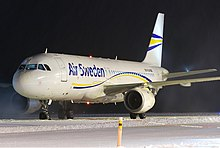
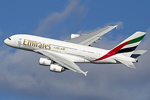

Flight shame or flygskam is an anti-flying social movement, with the aim of reducing the environmental impact of aviation. Flight shame refers to an individual's uneasiness over engaging in consumption that is energy-intense and climatically problematic. It also reflects on air travelers as people involved in socially undesirable activities, and adaptive behaviour as described in the related Swedish term smygflyga.[1] It started in 2018 in Sweden and gained traction the following year throughout northern Europe.[2] Flygskam is a Swedish word that literally means "flight shame".[2] The movement discourages people from flying to lower carbon emissions to thwart climate change.[2]Origins

The Airbus A380 is a very large wide-body airliner that was developed and produced by Airbus. It is the world's largest passenger airliner and only full-length double-deck jet airliner. Airbus studies started in 1988, and the project was announced in 1990 to challenge the dominance of the Boeing 747 in the long-haul market. The then-designated A3XX project was presented in 1994; Airbus launched the €9.5 billion ($10.7 billion) A380 programme on 19 December 2000. The first prototype was unveiled in Toulouse on 18 January 2005, with its first flight on 27 April 2005. It then obtained its type certificate from the European Aviation Safety Agency (EASA) and the US Federal Aviation Administration (FAA) on 12 December 2006. Due to difficulties with the electrical wiring, the

The Airbus A380 is a very large wide-body airliner that was developed and produced by Airbus. It is the world's largest passenger airliner and only full-length double-deck jet airliner. Airbus studies started in 1988, and the project was announced in 1990 to challenge the dominance of the Boeing 747 in the long-haul market. The then-designated A3XX project was presented in 1994; Airbus launched the €9.5 billion ($10.7 billion) A380 programme on 19 December 2000. The first prototype was unveiled in Toulouse on 18 January 2005, with its first flight on 27 April 2005. It then obtained its type certificate from the European Aviation Safety Agency (EASA) and the US Federal Aviation Administration (FAA) on 12 December 2006.

The Airbus A320neo family is an incremental development of the A320 family of narrow-body airliners produced by Airbus. The A320neo family (neo being Greek for "new", as well as an acronym for "new engine option") is based on the previous A319, A320, and A321 (enhanced variant), which was then retroactively renamed the A320ceo family (ceo acronym for "current engine option").
The Airbus A320neo family is an incremental development of the A320 family of narrow-body airliners produced by Airbus. The A320neo family (neo being Greek for "new", as well as an acronym for "new engine option") is based on the previous A319, A320, and A321 (enhanced variant), which was then retroactively renamed the A320ceo family (ceo acronym for "current engine option").
The Airbus A320neo family is an incremental development of the A320 family of narrow-body airliners produced by Airbus. The A320neo family (neo being Greek for "new", as well as an acronym for "new engine option") is based on the previous A319, A320, and A321 (enhanced variant), which was then retroactively renamed the A320ceo family (ceo acronym for "current engine option").